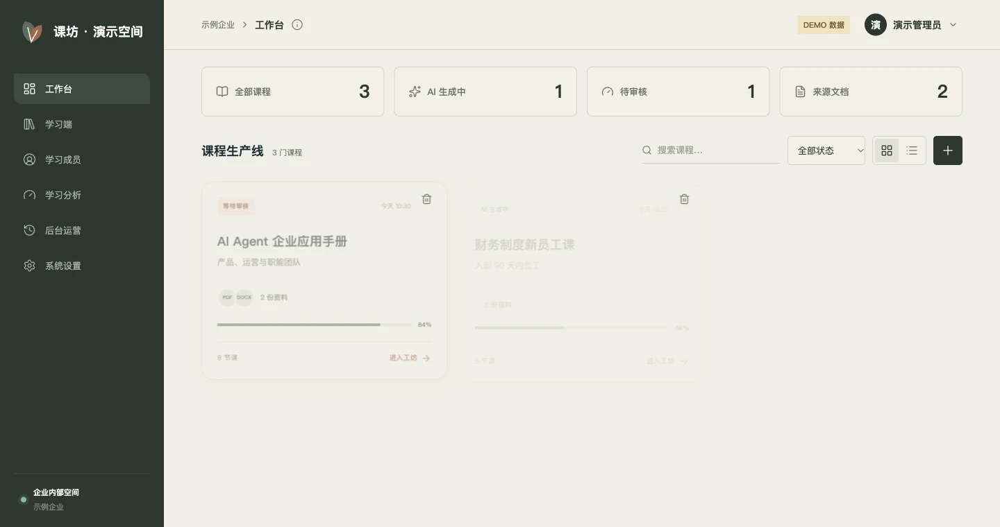
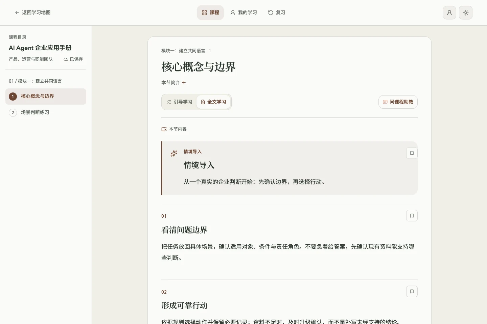
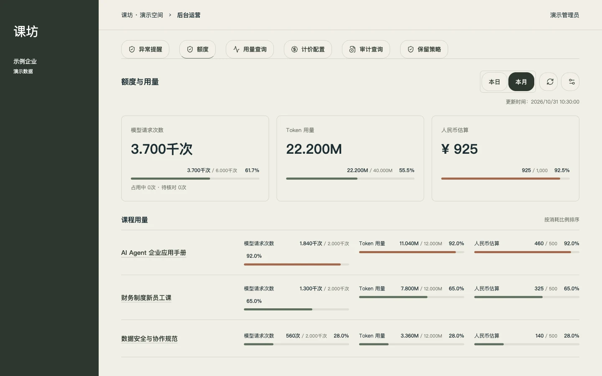
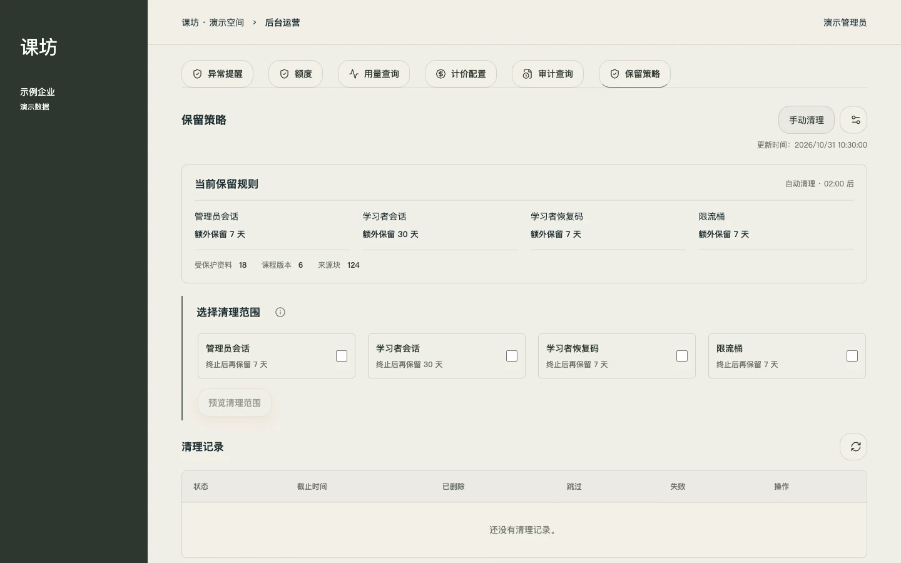

异常提醒
失败、超时、排队与预算提醒。异常恢复与人工处理分别跟踪。
企业自定义课程平台 · V0.5.4
本课程来自课坊平台（custom-course-platform）
从一份制度、一组案例，到一门有依据的课程。
AI 协助制作，管理员审核，员工随时续学。
解析 · 引用 · 生成 · 审核
练习 · 收藏 · 错题 · 续学
提醒 · 审计 · 配额 · 保留

从制作，到使用
PDF、扫描件、DOCX 与 Markdown，统一解析为带页码和标题路径的来源块。长资料分层归纳，再生成目标、大纲和课节。
从原始资料到每一节课，
保留核对的线索。

情境、对话、互动练习与测验组成学习路径。进度、收藏和错题按课程版本保存，离线操作恢复后幂等同步。
03 / V0.5.4 运营能力
四项能力按顺序整合，连接同一条调用、任务与操作记录。
失败、超时、排队与预算提醒。异常恢复与人工处理分别跟踪。
按操作编号、课程和操作人查询，展开安全脱敏的关联详情。
企业与课程的日／月额度。请求次数硬限制，用量和费用做提醒。
只清理指定过期凭据。先预览、再确认，分批执行并保留记录。

管理员会话、学习者会话、恢复码和限流桶，按类别配置额外保留天数。支持立即或预约生效。
课程资料、来源引用、课程版本、学习档案、调用账本、审计和 Storage 文件始终保留，不参与清理。
查看授权说明
为企业与团队定制
从现有配置开始，按学习对象、资料和组织规则确定交付范围。
平台未开源 · 企业授权与定制
本仓库开放的是 Agent 课程学习站。课坊平台（custom-course-platform）尚未开源，本目录只提供产品介绍与演示截图。
欢迎企业用户或团队联系作者 Evan Song，沟通使用场景、定制需求和授权方式。